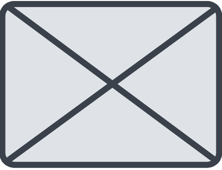

<ion-header [translucent]="true">
  <ion-toolbar>
    <ion-title>chek_QR_alumno</ion-title>
  </ion-toolbar>
</ion-header>

<ion-content [fullscreen]="true">
  <ion-header collapse="condense">
    <div class="center-content">
      
      <ion-button expand="full" routerLink="/check-alumn" class="bottom-button">Escanear QR</ion-button>
    </div>
  </ion-header>
</ion-content>
